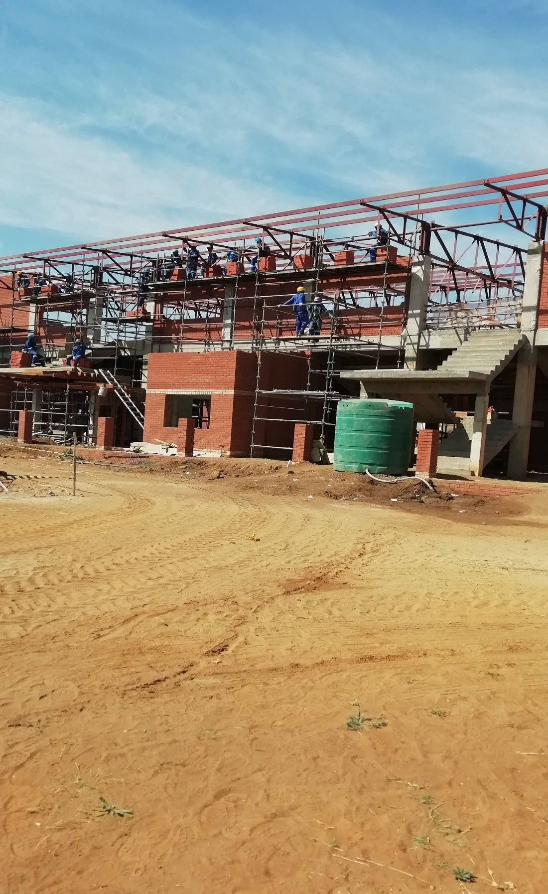
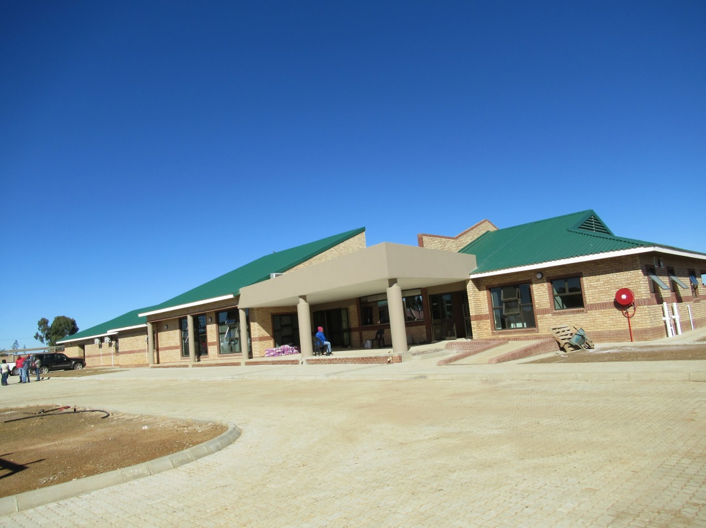

Build with coordination.
General building and core building trades supported by project management, documentation and site coordination.
From structure to finish.
The service offering includes general building, roofing, ceilings, tiling, plumbing and electrical work, alongside new-build construction and renovations & upgrades.
General building
Core construction delivery.
Roofing
Roofing works and upgrades.
Finishes
Ceilings, tiling and related finishing works.
Services
Plumbing and electrical trades.

Real project imagery from the company profile.

Project imagery selected from the supplied profile.
Build against a clear programme.
The profile describes monitoring contractor performance against an approved Construction Programme and Projected Cash Flow, with construction documentation schedules and progress payment certificates forming part of administration.
See supervision →